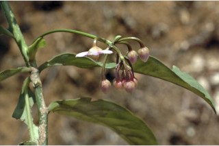
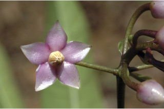
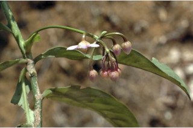
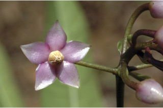

Images :
 





| Habit : | Small trees up to 6 m tall. |
| Leaves : | Leaves simple , alternate , spiral ; petiole ca. 1 cm long, stout, canaliculate , glabrous ; lamina 10-21.5 (34) x 4-7.5 (11.5) cm, elliptic-obovate or oblanceolate , apex acute to acuminate , base attenuate to cuneate , margin entire or obscurely crenate towards apex , glabrous , glaucous beneath, coriaceous , gland dotted; midrib flat above; secondary_nerves 9-20 pairs, slender; tertiary_nerves broadly reticulate or obscure . |
| Inflorescence / Flower : | Inflorescence axillary or lateral umbels ; flowers pink; peduncle up to 12 cm long. |
| Fruit and Seed : | Berry , globose , 0.8 cm across, bright red; seed one. |